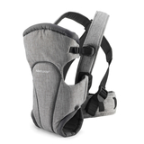
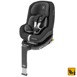
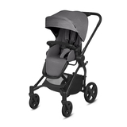
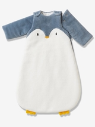
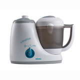
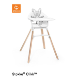
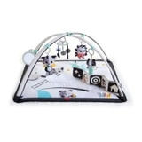
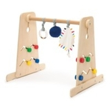

Nous sommes heureux de vous apprendre la naissance de Léo prévu le 10 février 2021.
Si vous souhaitez nous aider à préparer l'arrivée de notre fils, nous avons créé une liste de naissance
car vous avez été nombreux à nous le demander.
Sélectionnez un article de votre choix parmi la liste et n'oubliez pas de cliquer sur le lien en dessous
du tableau pour nous envoyer un message.
Pour éviter les doublons, pensez à ne sélectionner que les articles qui seront encadrés de vert
ou de rouge pour les urgents.
Merci et à très bientôt.
Nicolas et Noémie, des parents comblés.
Voici la liste de nos envies:
| Désignation | Image | Description | Lien du site vendeur |
|---|---|---|---|
| Les sorties | |||
| Porte-bébé gris |  | Le porte-bébé Aubert Concept, pour un portage ventral et dorsal. | Aubert |
| Siège auto |  | siège auto de Bébé Confort pour bébé de 6 mois à 4 ans. | Aubert |
| Poussette et nacelle |  | Pack comprenant une poussette et une nacelle, pour une utilisation dès la naissance et jusqu"à 15 kg. Poussette élégante et robuste, elle s'adapte à tous les terrains. | Aubert |
| Chambre | |||
| Gigoteuse |  | Gigoteuse manches amovibles en microfibre ETOILE POLAIRE - écru / gris | Verbaudet |
| Veilleuse musicale évolutive | La veilleuse musicale s'active par la voix ou les pleurs et commence à jouer de douces mélodies. | Verbaudet | |
| Repas | |||
| Babycook Grey/Blue de Béaba |  | Robot 4 en 1 : cuit à la vapeur, mixe, décongèle, réchauffe. | Aubert |
| Chaise haute |  | chaise haute de Stokke® | Aubert |
| Eveil | |||
| Tapis d'éveil |  | Tapis d'éveil Gymini Noir et blanc stimule la vue de votre bébé dès ses premiers jours. | Oxybul |
| Arche d'activités |  | Allongé sur son tapis ou assis dans son cosy, le bébé regarde les 3 hochets d'éveil Sensibul, tente de les attraper. | Oxybul |